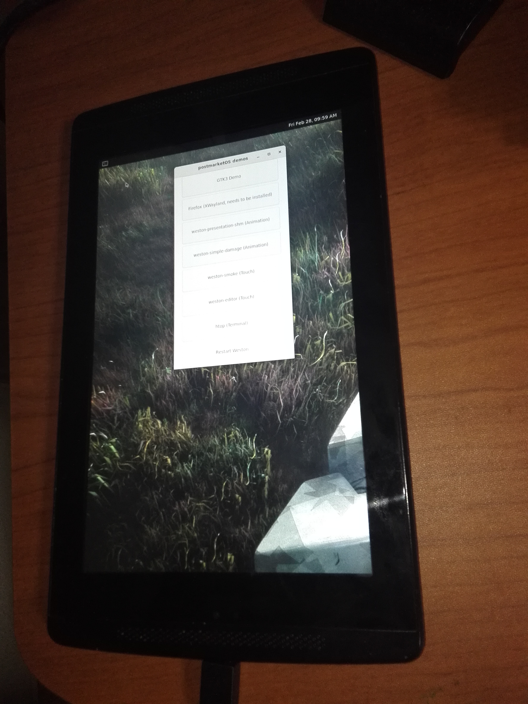

NVIDIA Tegra Note 7 (nvidia-tegratab)
Jump to navigation
Jump to search
|
 booting photo | |
| Manufacturer | NVIDIA |
|---|---|
| Name | Tegra Note 7 |
| Codename | nvidia-tegratab |
| Released | 2013 |
| Category | testing |
| Original software | Android 4.2.2 |
| postmarketOS kernel | 3.4.57 |
| Hardware | |
| Chipset | Nvidia Tegra 4 (T114) |
| CPU | 4+1core 1.8 Ghz Cortex-A15 |
| GPU | GeForce ULP 72core |
| Display | 800x1280 7inch LCD |
| Storage | 16 GB |
| Memory | 1 GB |
| Architecture | armv7 |
{kind=link}
This device is marked as not booting.
| USB Networking |
Works
|
|---|---|
| Flashing |
Works
|
| Touchscreen |
Broken
|
| Display |
Works
|
| WiFi |
Broken
|
| FDE |
Broken
|
| Mainline |
Works
|
| Battery |
Broken
|
| 3D Acceleration | |
| Audio | |
| Bluetooth |
Broken
|
| Camera | |
| GPS |
Broken
|
| Mobile data |
Unavailable
|
| SMS |
Unavailable
|
| Calls |
Unavailable
|
| USB OTG | |
| NFC | |
| Accelerometer | |
|---|---|
| Magnetometer | |
| Ambient Light | |
| Proximity | |
| Hall Effect | |
| Barometer | |
| Power Sensor | |
| Camera Flash | |
|---|---|
| Keyboard | |
| Touchpad | |
| USB-A | |
| HDMI/DP | |
| Ir TX | |
| Ir RX | |
| Stylus | |
| Haptics | |
| Ethernet | |
| FOSS bootloader | |
Contents
OEM Variants
- HP Slate 7 Extreme (hp-olive)
- ZOTAC Tegra Note 7
- EVGA Tegra Note 7 ...and more info wikipedia
Contributors
- coffeebeat
Maintainer(s)
Users owning this device
How to enter flash mode
Hold Power + Vol Up, enter to fastboot protocol
Memo
Using GCC6,
Mostly flashing method doesn't work, but pmbootstrap install --sdcard is OK,
boot topmbootstrap flasher boot
I'm not recommended flasher flash_kernel, because you can't charging battery!
tegranote7c is LTE version(Probably). Don't get confused.
osk-sdl
# osk-sdl -d a -n a -c /etc/osk.conf -v
INFO: /home/buildozer/aports/community/sdl2/src/SDL2-2.0.12/src/video/directfb/SDL_DirectFB_video.c (239):A general initialization error occured
Segmentation fault
wifi
fix to firmware path
$ sudo mkdir -p system/etc
$ cd system/etc
$ sudo ln -s /lib/firmware/ti-connectivity firmware
wl12xx: loaded
but it's not work
$ ip set wlan0 up
wl12xx: WARNING unsupported chip id: 0x0
SDIO Vendor ID:0097 and SDIO Device ID: 4076
wl12xx: WARNING unsupported chip id: 0x0
SDIO Vendor ID:0097 and SDIO Device ID: 4076
wl12xx: WARNING unsupported chip id: 0x0
wl12xx: ERROR firmware boot failed despite 3 retries
Mainline (Grate)
Mainline kernel contains tegra114-tn7.dts.
It's partial worked linux-postmarketos-grate(5.11.0_rc4), but have some problems.
I'm not recommended to test this (Maybe killed sdcard slot).
Hardware status (mainline)
| Status | info | |
|---|---|---|
| Booting | Y | |
| Xwayland | Y | confirmed startup demos |
| USB Telnet | N | |
| Wifi, Bluetooth | wl1271, in mainline | |
| Touchscreen | maxim_sti, not in mainline | |
| Battery gauge | max17048, in mainline(max17040) |